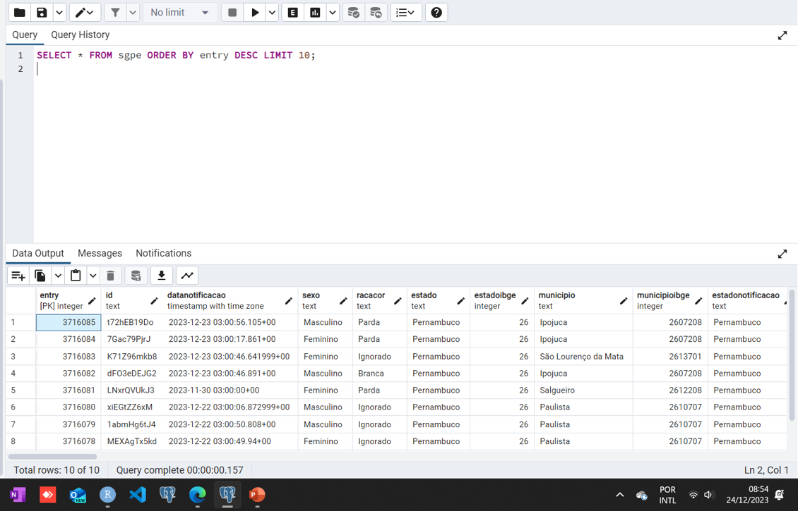
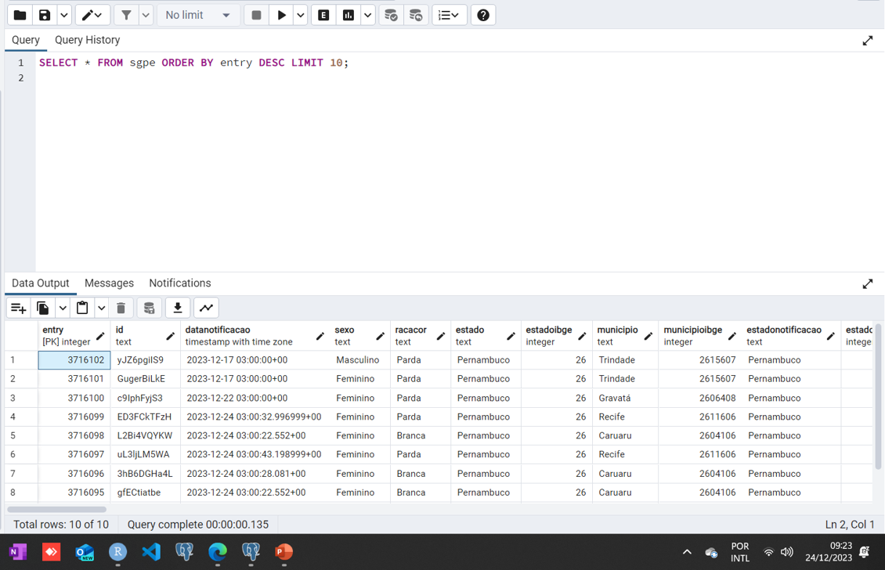

Síndrome Gripal (SG) em Pernambuco: um painel de vigilância
Author
BioHub Solutions
Published
Última Atualização: 05-01-2024
Objetivo:
A finalidade é criar uma dashboard, com atualização automática, das notificações de síndrome gripal suspeitas de covid-19, em Pernambuco, com os dados desde 2020. Nessa dashboard, precisa constar, no mínimo, alguns indicadores: número total de notificações; média de idade das pessoas notificadas; data e hora da última notificação; número de notificações por sintomas, por condição pré-existente e por município.
Uma característica dos dados é que as notificações são de casos leves e suspeitos notificados pelo SUS, portanto, não reflete a totalidade dos casos de covid-19 nem o total de pessoas imunizadas. Outro ponto importante é que os casos de Síndrome Respiratória Aguda Grave (SRAG) não são contemplados nesta base de dados. Apesar disso, esse dataset serve como um bom parâmetro para monitorar a situação da covid-19 no estado.
Existem duas dashboards que mostram dados de covid-19 no Brasil: uma mais estática, e outra mais interativa, mostrando até os casos diários. No entanto, além de a atualização não ser tão frequente, os dados são pouco explorados.
Carregamento dos pacotes
Code
#Executar scripts do python no Rlibrary(reticulate)#ETL dos dadoslibrary(data.table)library(DBI)library(RPostgres)library(tidyverse)#criar rotinas no Rlibrary(taskscheduleR)#adicionar configuracao para nao converter os eixos dos valores para notação científicaoptions(scipen =999)
ETL (extract, transform and load)
Os dados foram baixados diretamente da API do DataSUS utilizando um script em python obtido no própio site do DataSUS com algumas modificações. as credenciais para acessar os dados via API do Elasticsearch estão disponíveis neste link e precisam ser adicionadas dentro dos scripts. Outra consideração importante nesse tutorial é que os diretórios para os arquivos acessados se referem a máquina onde este tutorial foi contruído. Portanto, é importante alterar esses trechos para a máquina que você utilizará.
NOTA: É importante inserir sua senha de acesso ao elasticsearch (linhas 29 e 30) e colocar dentro do script (linha 44) o caminho absoluto onde será salvo o arquivo .csv com os resultados da busca.
Uma vez que a requisição à API foi concluída, realizamos algumas transformações nos dados e carregamos para um banco de dados postgreSQL utilizando o R:
NOTA: alterar suas credenciais para acessar o banco de dados.
Code
#### carregar o arquivo CSV com a resposta da requisição ####sgpe =fread("C:/Users/ronal/Downloads/esus/desc-esus-notifica-estado-pe_total.csv")#renomear os nomes das colunassgpe = sgpe %>%rename(timestamp =`@timestamp`) %>%rename(version =`@version`)names(sgpe) =tolower(names(sgpe))#### criar uma conexão do R com o postgreSQL #####my_user ="postgres"my_password ="r>python"#coloque sua senha aquicon <-dbConnect(drv = RPostgres::Postgres(),dbname="postgres",host ="localhost",port =5432,user = my_user,password = my_password)#### transformação dos dados #####criar uma chave-primária utilizando o numero da linhasgpe = sgpe %>%mutate(entry =rownames(sgpe)) %>%relocate(entry, .before ="id")#criar colunas com ano e mâs de notificaçãosgpe = sgpe %>%mutate(ano_notif =as.numeric(substr(datanotificacao, 1, 4))) %>%mutate(mes_notif =as.numeric(substr(datanotificacao, 6, 7)))#número de dias dos sintomas até a notificaçãox =interval(as.Date(sgpe$datanotificacao),as.Date(sgpe$datainiciosintomas))x=abs(x %/%days(1))sgpe = sgpe %>%mutate(dias_ate_notif = x)rm(x)#número de dosessgpe = sgpe %>%mutate(n_doses =gsub('"|\\[|\\]|\\|,',"", codigodosesVacina)) %>%mutate(n_doses =gsub("'| |,","", n_doses)) %>%mutate(n_doses =nchar(n_doses))#avaliar se o desfecho foi covid-19sgpe = sgpe %>%mutate(covid =case_when(!classificacaofinal %in%c("Síndrome Gripal Não Especificada","Descartado") ~"covid", classificacaofinal =="Síndrome Gripal Não Especificada"~"SG não especificada", classificacaofinal =="Descartado"~"descartado")) %>%mutate(covid =if_else(is.na(classificacaofinal) ==TRUE, NA, covid))#mudar valores vazios para NA em algumas colunassgpe = sgpe %>%mutate(sintomas =na_if(sintomas,"")) %>%mutate(condicoes =na_if(condicoes,"")) %>%mutate(racacor =na_if(racacor,"")) %>%mutate(ano_notif =na_if(ano_notif, 2002)) %>%mutate(evolucaocaso =na_if(evolucaocaso, "")) %>%mutate(sexo =na_if(sexo,"")) %>%mutate(municipionotificacao =na_if(municipionotificacao,"")) %>%mutate(classificacaofinal =na_if(classificacaofinal,"")) %>%mutate(datanotificacao =if_else(year(datanotificacao) ==2002, NA , datanotificacao))#### escrever o dataframe transformado para uma tabela no PostgreSQL ####dbWriteTable(conn = con,name ="sgpe", value = sgpe,field.types =c(entry ="SERIAL PRIMARY KEY"),overwrite =TRUE)# fechar a conexãodbDisconnect(con)rm(con)
Alimentar nosso banco com as novas atualizações
A seguir, adaptamos os script anteriores para obter as atualizações das notificações e carregar no banco de dados. Na requisição, criamos um modo para extrair do nosso banco de dados a data e hora do último registro (variárvel ‘timestamp’) e passamos esse valor como data e hora inicial em que queremos os registros. A data e hora final é sempre o momento em que a requisição será feita.
NOTA: lembre-se de alterar as credencias de acesso do elasticsearch (linhas 52 e 53), do seu banco de dados PostgreSQL (linhas 17 a 23) e caminho absoluto no script de atualização dos dados com o destino de onde o arquivo .csv será salvo (linha 70).
Primeiro, obter as atualizações por meio de nova requisição via API:
Agora, realizar as transformações nos dados e carregar os novos registros no nosso database.
Code
#### carregar o arquivo .csv com os novos registros ####to_update =fread("C:/Users/ronal/Downloads/esus/desc-esus-notifica-estado-pe.csv")#renomear os nomes das colunasto_update = to_update %>%rename(timestamp =`@timestamp`) %>%rename(version =`@version`)names(to_update) =tolower(names(to_update))#### criar uma conexão do R com o postgreSQL #####my_user ="postgres"my_password ="r>python"#coloque sua senha aquicon <-dbConnect(drv = RPostgres::Postgres(),dbname="postgres",host ="localhost",port =5432,user = my_user,password = my_password)#### verificar se as novas entradas já estão presentes no database ####ids =paste0(to_update$id, collapse ="','")query =paste0("SELECT * FROM sgpe WHERE id IN ('", ids, "');")result =dbGetQuery(con, query)result = result %>%filter(registroatual ==TRUE)#eliminar das atualizações, as entradas já existentesto_update = to_update %>%filter(registroatual ==TRUE) %>%filter(!id %in% result$id)#### transformação dos dados e carregamento no nosso database #####avaliar se precisa atualizarif(nrow(to_update) >0){#descobrir a última chave primária cadastrada no banco query =paste0("SELECT MAX(entry) FROM sgpe;") result =dbGetQuery(con, query)#adicionando a chave primária e novas colunas to_update = to_update %>%mutate(entry =seq(result$max+1, result$max+1+nrow(to_update)-1)) %>%relocate(entry, .before ="id") to_update = to_update %>%mutate(ano_notif =as.numeric(substr(datanotificacao, 1, 4))) %>%mutate(mes_notif =as.numeric(substr(datanotificacao, 6, 7)))#número de dias dos sintomas até a notificação x =interval(as.Date(to_update$datanotificacao),as.Date(to_update$datainiciosintomas)) x=abs(x %/%days(1)) to_update = to_update %>%mutate(dias_ate_notif = x)rm(x)#número de doses to_update = to_update %>%mutate(n_doses =gsub('"|\\[|\\]|\\|,',"", codigodosesvacina)) %>%mutate(n_doses =gsub("'| |,","", n_doses)) %>%mutate(n_doses =nchar(n_doses))#avaliar se o desfecho foi covid-19 to_update = to_update %>%mutate(covid =case_when(!classificacaofinal %in%c("Síndrome Gripal Não Especificada","Descartado") ~"covid", classificacaofinal =="Síndrome Gripal Não Especificada"~"SG não especificada", classificacaofinal =="Descartado"~"descartado")) %>%mutate(covid =if_else(is.na(classificacaofinal) ==TRUE, NA, covid))#mudar valores vazios para NA to_update = to_update %>%mutate(sintomas =if_else(sintomas =="", NA, sintomas)) %>%mutate(condicoes =if_else(condicoes =="", NA, condicoes)) %>%mutate(racacor =if_else(racacor =="", NA, racacor)) %>%mutate(ano_notif =na_if(ano_notif, 2002)) %>%mutate(evolucaocaso =if_else(evolucaocaso =="", NA, evolucaocaso)) %>%mutate(sexo =if_else(sexo =="", NA, sexo)) %>%mutate(municipionotificacao =if_else(municipionotificacao =="", NA, municipionotificacao)) %>%mutate(classificacaofinal =if_else(classificacaofinal =="", NA, classificacaofinal)) %>%mutate(datanotificacao =if_else(year(datanotificacao) ==2002, NA , datanotificacao))#carregar o dataframe para nossa tabela no PostgreSQLdbWriteTable(conn = con,name ="sgpe", value = to_update,append =TRUE, row.names =FALSE)#encerrar a conexãodbDisconnect(con)rm(con) } else {#encerrar a conexãodbDisconnect(con)rm(con) print("não precisa atualizar!")}
Criando uma rotina no R para executar a atualização a cada hora
Como a atualização nas notificações é feita de modo contínuo, criamos uma rotina para excutar o script python para baixar as novas notificações e o script R para tratar os dados e carregar no database. Utilizamos o pacote ‘taskscheduleR’. Vale salientar que esse pacote funciona apenas para agendamento de tarefas no Windows. Para MacOS e Linux, é necessário utlizar o pacote ‘cronR’. Este tutorial é bastante útil sobre como usar esse pacotes.
NOTA: é importante utilizar os caminhos absolutos dos arquivo python de atualização dos registros e do arquivo .csv onde a requisição à API será salva.
Para confirmar que a automação está funcionando, basta realizarmos a busca pela variável ‘entry’ mais recente dentro do pgAdmin:

Figure 1: Antes

Figure 2: Depois
Dashboard no Power BI
Algumas limitações:
Nesta versão do report, estou rodando no meu próprio computador. Em breve, irei mover o database para o Azure ou algum outro servidor;
Como a conexão será on premise, é necessário baixar e configurar um gateway para que o Power BI se comunique com a máquina. Eu utilizei o gateway do modo padrão.
Para máquinas em que o database está no Windows (meu caso, atualmente), é necessário que o postgreSQL esteja instalado com o driver npsql 4.0.10, ou superior, para que o Power BI se comunique com o database.
Nossa licença atual do Powe BI (Pro) só permite até oito atualizações diárias dos dados. Assim, apesar do banco de dados ser atualizado de hora em hora, as alterações só serão visíveis no Power BI a cada três horas, contando a partir da meia-noite.